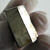

lithium

Definition: Lithium (from Ancient Greek λίθος (líthos) 'stone') is a chemical element with the symbol Li and atomic number 3. It is a soft, silvery-white alkali metal. Under standard conditions, it is the least dense metal and the least dense solid element. Like all alkali metals, lithium is highly reactive and flammable, and must be stored in vacuum, inert atmosphere, or inert liquid such as purified kerosene or mineral oil. It exhibits a metallic luster. It corrodes quickly in air to a dull silvery gray, then black tarnish. It does not occur freely in nature, but occurs mainly as pegmatitic minerals, which were once the main source of lithium. Due to its solubility as an ion, it is present in ocean water and is commonly obtained from brines. Lithium metal is isolated electrolytically from a mixture of lithium chloride and potassium chloride.
Source: Wikipedia
Wikipedia Page (Something wrong with this association? Let us know.)
Wikidata Page (Something wrong with this association? Let us know.)